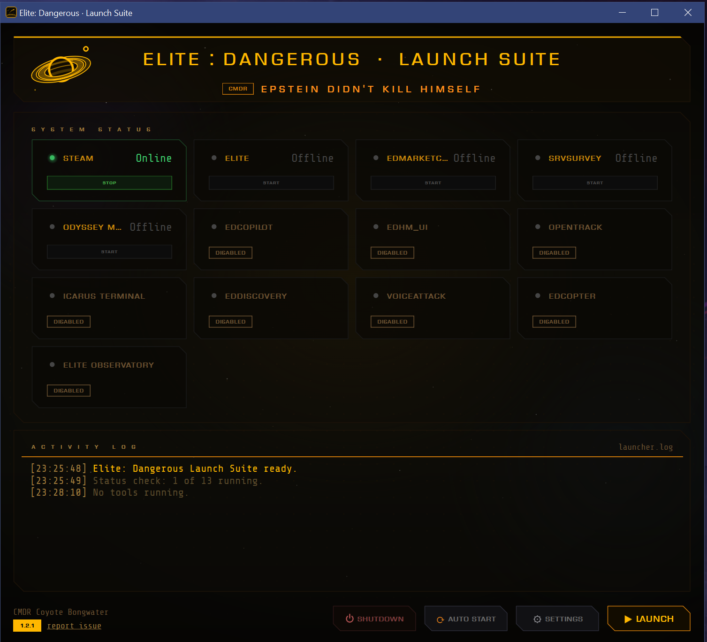

Launch
Steam. Elite. Your tools. One key.
Press LAUNCH and EDLS starts Steam, boots Elite: Dangerous through min-ed-launcher, waits for the game, then brings up every companion tool you've ticked, in the order you set. Frontier's launcher never gets in the way.
- Game already running? LAUNCH attaches to it instead of starting a second copy.
- Tools you already had open are picked up, not restarted.
- AUTO START launches the moment EDLS opens. One click becomes none.